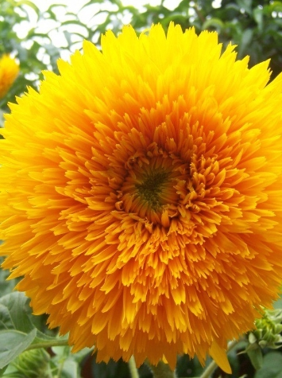

Girassol
Helianthus annuusTambém famoso por passar o dia acompanhando o ciclo do sol, o girassol surgiu nos Estados Unidos, mas hoje é cultivado no mundo para extração de óleo. As sementes, produzidas após a floração no lugar onde era o miolo da flor, são muito apreciadas por pássaros, por isso, se tiver girassóis plantados num canteiro, pode esperar a visita dos bicudos assim que as flores secarem. Aliás, os pássaros não só consomem a semente do girassol como também as disseminam. Não se surpreenda se ver um girassol nascendo num terreno baldio, em uma calçada ou até mesmo na varanda
- Nome popular: Girassol
- Outros nomes: Corona-Solar, Margarida-Do-Peru
- Categoria: Flores
- Ordem: Asterales
- Família: Asteraceae
- Espécie: Helianthus Annuus
- Tamanho: De 1,5 M A 4 M
- Propagação: Por Semente
Nenhuma flor exótica foi tão retratada nas artes plásticas quanto o girassol. Inspiração por dois anos para o holandês Vincent Van Gogh, os campos de girassóis na França culminaram em uma série de obras primas, em que o amarelo das flores é representado em uma grande e luminosa gama cromática. O resultado é tão impactante que, em 1987, um magnata japonês se dispôs a comprar "Jarro com 15 Girassóis" pela quantia de US$ 40 milhões de dólares, fama que deixaria muita roseira com inveja. A flor amarela está presente no nosso imaginário, seja em pinturas, músicas, filmes, moda e até mesmo em lendas e crenças.
Comestíveis também para nós, as sementes de girassol contém vitamina E, cobre, potássio, magnésio, fósforo e selênio, todos minerais importantes para nosso organismo. Também é fonte de frutose, um açúcar natural menos calórico do que o extraído da cana. Não bastassem todos esses benefícios, suas folhas têm ação expectorante e são usadas no tratamento de doenças pulmonares.
Como acontece com as plantas chamadas anuais, o ciclo de vida do girassol não ultrapassa 12 meses, a partir das sementes. Cultive-o em vasos ou canteiros com bastante composto orgânico, em local ensolarado, mantendo a terra úmida, nunca encharcada ou seca demais. Em poucos meses surgirão grandes folhas ásperas e com pelos, para em seguida surgirem os botões. As flores podem ter o miolo amarelo, marrom ou preto, dependendo da variedade
Não deixe de procurar nas casas agrícolas sementes da espécie "Teddy Bear", também conhecida por girassol-de-ouro, cujas flores parecem graciosos pompons amarelos — de porte ligeiramente menor, essa planta tem cultivo idêntico ao girassol comum.
